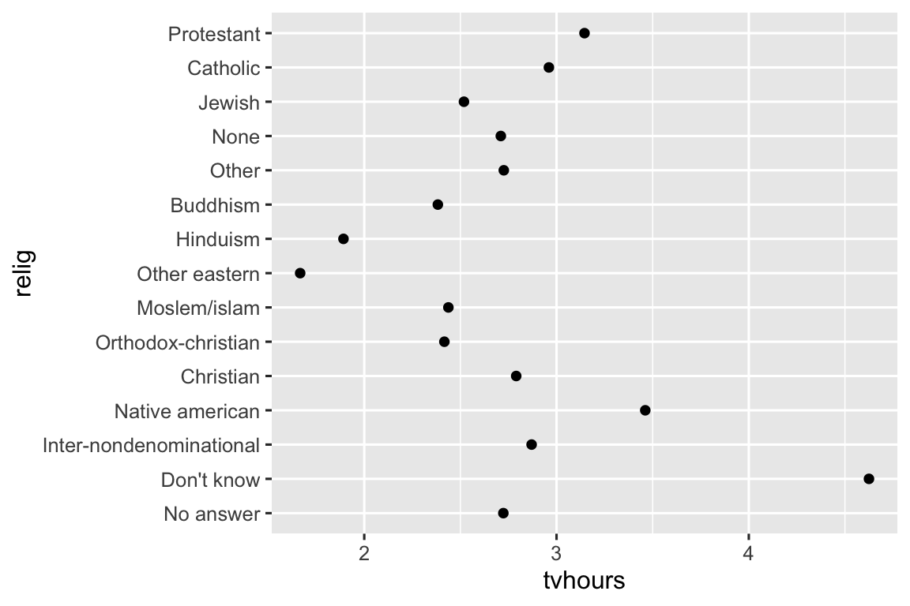
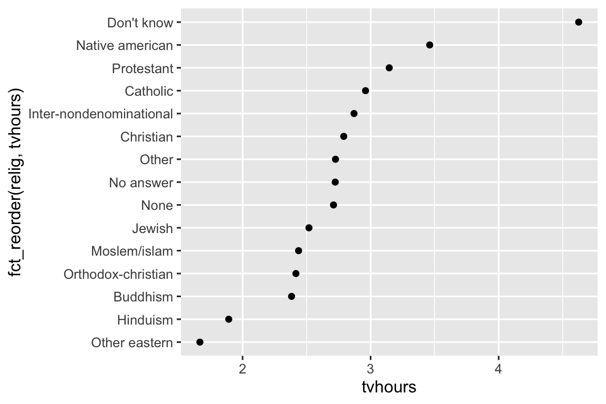
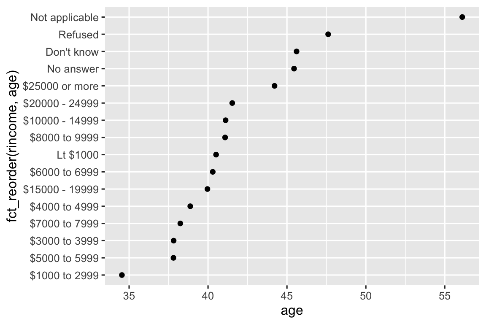
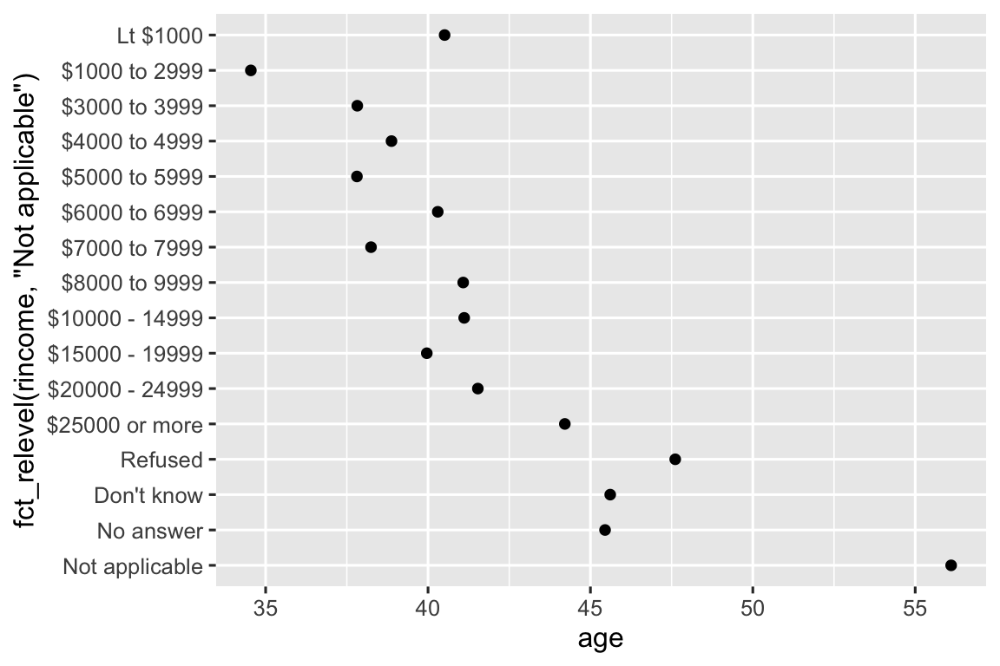
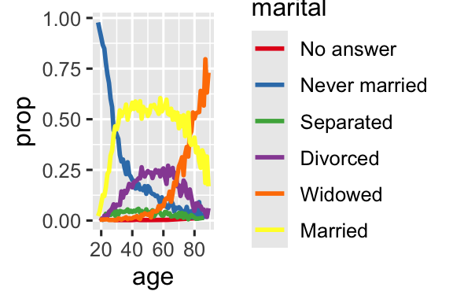
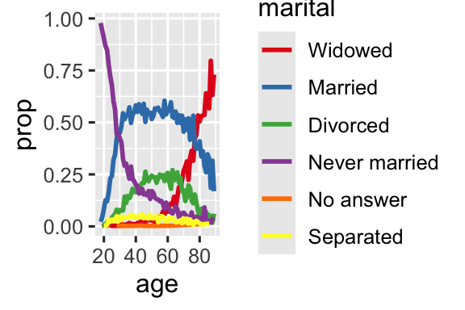
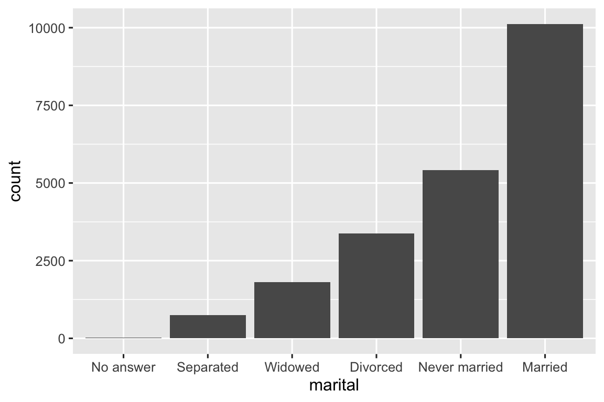

library(tidyverse)벡터: Factors
요인(factors)은 고정되고(fixed) 알려진 가능한 값의 집합을 갖는 변수인 범주형 변수(categorical variables)에 사용됩니다. 문자형 벡터를 알파벳순이 아닌 순서로 표시하려고 할 때도 유용합니다.
먼저 데이터 분석에 왜 요인이 필요한지, 그리고 factor()를 사용하여 요인을 어떻게 만들 수 있는지 동기를 부여(motivating)하는 것으로 시작하겠습니다. 그런 다음 실험해 볼 수 있는 많은 범주형 변수를 포함하고 있는 gss_cat 데이터셋을 소개할 것입니다.
그런 다음 순서형 요인(ordered factors)에 대한 논의로 마무리하기 전에 해당 데이터셋을 사용하여 요인의 순서와 값을 수정(modifying)하는 실습을 할 것입니다.
1 요인 기초
월(month)을 기록하는 변수가 있다고 상상해 보세요.
x1 <- c("Dec", "Apr", "Jan", "Mar")문자열을 사용하여 이 변수를 기록하면 두 가지 문제가 있습니다.
- 가능한 월은 12개뿐이며, 오타(typos)로부터 사용자를 구제해(saving) 줄 방법이 없습니다.
x2 <- c("Dec", "Apr", "Jam", "Mar")- 유용한 방식(useful way)으로 정렬(sort)되지 않습니다.
sort(x1)
#> [1] "Apr" "Dec" "Jan" "Mar"요인을 사용하면 이 두 가지 문제를 모두 해결할 수 있습니다. 요인을 만들려면 유효한(valid) 수준(levels) 목록을 만드는 것부터 시작해야 합니다.
month_levels <- c(
"Jan",
"Feb",
"Mar",
"Apr",
"May",
"Jun",
"Jul",
"Aug",
"Sep",
"Oct",
"Nov",
"Dec"
)이제 요인을 만들 수 있습니다.
y1 <- factor(x1, levels = month_levels)
sort(y1)
#> [1] Jan Mar Apr Dec
#> Levels: Jan Feb Mar Apr May Jun Jul Aug Sep Oct Nov Dec그리고 수준에 없는 값은 자동으로(silently) NA로 변환됩니다.
y2 <- factor(x2, levels = month_levels)
y2
#> [1] Dec Apr <NA> Mar
#> Levels: Jan Feb Mar Apr May Jun Jul Aug Sep Oct Nov Dec이것은 위험해(risky) 보이므로 대신 forcats::fct()를 사용하고 싶을 수 있습니다.
y2 <- fct(x2, levels = month_levels)
#> Error in `fct()`:
#> ! All values of `x` must appear in `levels` or `na`
#> ℹ Missing level: "Jam"수준을 생략하면 데이터에서 알파벳순으로 수준을 가져옵니다.
factor(x1)
#> [1] Dec Apr Jan Mar
#> Levels: Apr Dec Jan Mar모든 컴퓨터가 같은 방식으로 문자열을 정렬하는 것은 아니기 때문에 알파벳순으로 정렬하는 것은 약간 위험합니다. 따라서 forcats::fct()는 처음 나타나는(first appearance) 순서대로 정렬합니다.
fct(x1)
#> [1] Dec Apr Jan Mar
#> Levels: Dec Apr Jan Mar유효한 수준 집합에 직접 접근해야 하는 경우 levels()를 사용하여 접근할 수 있습니다.
levels(y2)
#> [1] "Jan" "Feb" "Mar" "Apr" "May" "Jun" "Jul" "Aug" "Sep" "Oct" "Nov" "Dec"readr로 데이터를 읽을 때 col_factor()를 사용하여 요인을 만들 수도 있습니다.
csv <- "
month,value
Jan,12
Feb,56
Mar,12"
df <- read_csv(csv, col_types = cols(month = col_factor(month_levels)))
#> Warning: The `file` argument of `read_csv()` should use `I()` for literal data as of
#> readr 2.2.0.
#>
#> # Bad (for example):
#> read_csv("x,y\n1,2")
#>
#> # Good:
#> read_csv(I("x,y\n1,2"))
df$month
#> [1] Jan Feb Mar
#> Levels: Jan Feb Mar Apr May Jun Jul Aug Sep Oct Nov Dec2 종합사회조사
이 장의 나머지(rest of this chapter) 부분에서는 forcats::gss_cat을 사용할 것입니다. 이것은 시카고 대학의 독립 연구 기관인 NORC에서 수행하는 미국의 장기(long-running) 설문조사인 종합사회조사(General Social Survey)https://gss.norc.org 데이터의 샘플입니다. 설문조사에는 수천 개의 질문이 있으므로 gss_cat에서 해들리(Hadley)는 요인으로 작업할 때 마주칠(encounter) 몇 가지 일반적인 과제를 보여줄 몇 가지(handful) 질문을 선택했습니다.
gss_cat
#> # A tibble: 21,483 × 9
#> year marital age race rincome partyid
#> <int> <fct> <int> <fct> <fct> <fct>
#> 1 2000 Never married 26 White $8000 to 9999 Ind,near rep
#> 2 2000 Divorced 48 White $8000 to 9999 Not str republican
#> 3 2000 Widowed 67 White Not applicable Independent
#> 4 2000 Never married 39 White Not applicable Ind,near rep
#> 5 2000 Divorced 25 White Not applicable Not str democrat
#> 6 2000 Married 25 White $20000 - 24999 Strong democrat
#> # ℹ 21,477 more rows
#> # ℹ 3 more variables: relig <fct>, denom <fct>, tvhours <int>요인이 티블에 저장되어 있으면 그 수준을 그렇게 쉽게 볼 수 없습니다. 이를 보는 한 가지 방법은 count()를 사용하는 것입니다.
gss_cat |> count(race)
#> # A tibble: 3 × 2
#> race n
#> <fct> <int>
#> 1 Other 1959
#> 2 Black 3129
#> 3 White 16395요인으로 작업할 때 일반적인 두 가지 연산은 수준의 순서를 변경(changing the order)하는 것과 수준의 값을 변경(changing the values)하는 것입니다.
2.1 연습 문제 (Exercises)
rincome(보고된 소득)의 분포를 탐색하세요. 기본 막대 차트를 이해하기 어렵게 만드는 것은 무엇입니까? 그래프을 어떻게 개선할 수 있습니까?이 설문 조사에서 흔한
relig는 무엇입니까? 흔한partyid는 무엇입니까?denom(종파)은 어느relig에 적용됩니까? 표(table)로 어떻게 알아낼 수 있습니까? 시각화(visualization)로 어떻게 알아낼 수 있습니까?
3 요인 순서 수정하기
시각화에서 요인 수준의 순서를 변경하는 것은 종종 유용합니다. 예를 들어 종교 전반에 걸쳐(across religions) 하루 평균 TV 시청 시간을 탐색(explore)하고 싶다고 상상해 보세요.
relig_summary <- gss_cat |>
group_by(relig) |>
summarize(
tvhours = mean(tvhours, na.rm = TRUE),
n = n()
)
ggplot(relig_summary, aes(x = tvhours, y = relig)) +
geom_point()
전체적인 패턴이 없기 때문에 이 그래프을 읽기 어렵습니다. fct_reorder()를 사용하여 relig의 수준을 재정렬(reordering)함으로써 그래프을 개선할 수 있습니다. fct_reorder()는 세 가지 인수를 사용합니다.
.f, 수준을 수정하려는 요인..x, 수준을 재정렬하는 데 사용하려는 숫자형 벡터.- 선택적으로
.fun,.f의 각 값에 대해.x의 값이 여러 개 있는 경우 사용되는 함수. 기본값은median(중앙값)입니다.
ggplot(relig_summary, aes(x = tvhours, y = fct_reorder(relig, tvhours))) +
geom_point()
종교를 재정렬하면 “Don’t know” 범주의 사람들이 TV를 훨씬 더 많이 시청하고 힌두교(Hinduism) 및 기타 동양(Other Eastern) 종교 사람들은 훨씬 적게 시청한다는 것을 파악하기가 훨씬 쉬워집니다.
더 복잡한 변환(transformations)을 만들기 시작할 때는 이를 aes() 외부로 꺼내어(moving them out of) 별도의 mutate() 단계에 넣을 것을 권장합니다. 예를 들어 위의 그래프을 다음과 같이 다시 작성할 수 있습니다.
relig_summary |>
mutate(
relig = fct_reorder(relig, tvhours)
) |>
ggplot(aes(x = tvhours, y = relig)) +
geom_point()보고된 소득(reported income) 수준에 따라 평균 연령이 어떻게 변하는지 보여주는 비슷한 그래프을 만들면 어떨까요?
rincome_summary <- gss_cat |>
group_by(rincome) |>
summarize(
age = mean(age, na.rm = TRUE),
n = n()
)
ggplot(rincome_summary, aes(x = age, y = fct_reorder(rincome, age))) +
geom_point()
여기서 임의로(arbitrarily) 수준을 재정렬하는 것은 좋은 생각이 아닙니다! 그것은 rincome이 이미 우리가 건드려서는 안 될 원칙적인 순서(principled order)를 가지고 있기 때문입니다. 수준이 임의로 정렬된 요인을 위해 fct_reorder()를 예약해 두세요(Reserve).
그러나 “Not applicable”(해당 없음)을 다른 특수 수준과 함께 앞으로 당기는(pull) 것은 이치에 맞습니다. fct_relevel()을 사용할 수 있습니다. 이것은 요인(.f)을 취한 다음 대기열의 앞(front of the line)으로 옮기고 싶은 임의 개수의 수준을 취합니다.
ggplot(
rincome_summary,
aes(x = age, y = fct_relevel(rincome, "Not applicable"))
) +
geom_point()
“Not applicable”의 평균 연령이 이렇게 높은 이유는 무엇이라고 생각합니까?
그래프의 선에 색을 칠할 때 또 다른 유형의 재정렬이 유용합니다. fct_reorder2(.f, .x, .y)는 큰 .x 값과 관련된 .y 값을 기준으로 요인 .f를 재정렬합니다. 그래프의 맨 오른쪽에 있는 선의 색상이 범례(legend)와 일치하기 때문에 그래프을 읽기 쉬워집니다.
by_age <- gss_cat |>
filter(!is.na(age)) |>
count(age, marital) |>
group_by(age) |>
mutate(
prop = n / sum(n)
)
ggplot(by_age, aes(x = age, y = prop, color = marital)) +
geom_line(linewidth = 1) +
scale_color_brewer(palette = "Set1")
ggplot(
by_age,
aes(x = age, y = prop, color = fct_reorder2(marital, age, prop))
) +
geom_line(linewidth = 1) +
scale_color_brewer(palette = "Set1") +
labs(color = "marital")

마지막으로 막대 그래프의 경우 fct_infreq()를 사용하여 빈도가 감소하는 순서로 수준을 정렬할 수 있습니다. 이는 추가 변수가 필요하지 않기 때문에 단순한 유형의 재정렬입니다. 막대 그래프에서 큰 값이 왼쪽이 아닌 오른쪽에 오도록 빈도가 증가하는 순서로 원한다면 fct_rev()와 결합하세요.
gss_cat |>
mutate(marital = marital |> fct_infreq() |> fct_rev()) |>
ggplot(aes(x = marital)) +
geom_bar()
3.1 연습 문제 (Exercises)
tvhours에 의심스러울 정도로 높은 숫자(suspiciously high numbers)가 일부 있습니다. 평균(mean)이 좋은 요약(summary)입니까?gss_cat의 각 요인에 대해 수준의 순서가 임의적인지 아니면 원칙적인지 식별하세요.“Not applicable”을 수준의 맨 앞으로 이동했는데 왜 그래프의 맨 아래로 이동했을까요?
4 요인 수준 수정하기
수준의 순서를 변경하는 것보다 더 강력한 것은 수준의 값을 변경하는 것입니다. 이를 통해 출판용 레이블을 명확히 하고 고수준 표시를 위해 수준을 축소(collapse)할 수 있습니다.
일반적이고 강력한 도구는 fct_recode()입니다. 각 수준의 값을 다시 코딩(recode)하거나 변경할 수 있습니다. 예를 들어 gss_cat 데이터 프레임에서 partyid 변수를 가져와 보겠습니다.
gss_cat |> count(partyid)
#> # A tibble: 10 × 2
#> partyid n
#> <fct> <int>
#> 1 No answer 154
#> 2 Don't know 1
#> 3 Other party 393
#> 4 Strong republican 2314
#> 5 Not str republican 3032
#> 6 Ind,near rep 1791
#> # ℹ 4 more rows수준이 짤막하고(terse) 일관성이 없습니다. 이것들을 더 길게 미세 조정하고(tweak) 평행 구조(parallel construction)를 사용해 봅시다. tidyverse의 대부분의 이름 바꾸기 및 재코딩 함수와 마찬가지로 새 값은 왼쪽에, 이전 값은 오른쪽에 들어갑니다.
gss_cat |>
mutate(
partyid = fct_recode(
partyid,
"Republican, strong" = "Strong republican",
"Republican, weak" = "Not str republican",
"Independent, near rep" = "Ind,near rep",
"Independent, near dem" = "Ind,near dem",
"Democrat, weak" = "Not str democrat",
"Democrat, strong" = "Strong democrat"
)
) |>
count(partyid)
#> # A tibble: 10 × 2
#> partyid n
#> <fct> <int>
#> 1 No answer 154
#> 2 Don't know 1
#> 3 Other party 393
#> 4 Republican, strong 2314
#> 5 Republican, weak 3032
#> 6 Independent, near rep 1791
#> # ℹ 4 more rowsfct_recode()는 명시적으로(explicitly) 언급되지 않은 수준을 그대로(as is) 둡니다. 실수로 존재하지 않는 수준을 참조하면 경고가 표시됩니다.
그룹을 결합(combine)하려면 여러 이전 수준을 동일한 새 수준에 할당(assign)할 수 있습니다.
gss_cat |>
mutate(
partyid = fct_recode(
partyid,
"Republican, strong" = "Strong republican",
"Republican, weak" = "Not str republican",
"Independent, near rep" = "Ind,near rep",
"Independent, near dem" = "Ind,near dem",
"Democrat, weak" = "Not str democrat",
"Democrat, strong" = "Strong democrat",
"Other" = "No answer",
"Other" = "Don't know",
"Other" = "Other party"
)
)이 기법을 사용할 때는 주의하세요(care): 진정으로(truly) 다른 범주를 함께 묶으면(group together) 오해를 불러일으키는(misleading) 결과를 얻게 됩니다.
많은 수준을 하나로 축소(collapse)하고 싶다면 fct_collapse()가 fct_recode()의 유용한 변형입니다. 각각의 새로운 변수에 대해 이전 수준의 벡터를 제공할 수 있습니다.
gss_cat |>
mutate(
partyid = fct_collapse(
partyid,
"other" = c("No answer", "Don't know", "Other party"),
"rep" = c("Strong republican", "Not str republican"),
"ind" = c("Ind,near rep", "Independent", "Ind,near dem"),
"dem" = c("Not str democrat", "Strong democrat")
)
) |>
count(partyid)
#> # A tibble: 4 × 2
#> partyid n
#> <fct> <int>
#> 1 other 548
#> 2 rep 5346
#> 3 ind 8409
#> 4 dem 7180때로는 작은 그룹을 함께 뭉뚱그려(lump together) 그래프이나 표를 더 단순하게 만들고 싶을 때가 있습니다. 이것이 fct_lump_*() 제품군(family)의 함수가 하는 일입니다. fct_lump_lowfreq()는 작은 그룹 범주를 점진적으로(progressively) “Other”로 뭉뚱그리고 “Other”를 항상 작은 범주로 유지하는 간단한 시작점(starting point)입니다.
gss_cat |>
mutate(relig = fct_lump_lowfreq(relig)) |>
count(relig)
#> # A tibble: 2 × 2
#> relig n
#> <fct> <int>
#> 1 Protestant 10846
#> 2 Other 10637이 경우 그다지 도움이 되지 않습니다. 이 설문조사에서 미국인의 대다수(majority)가 개신교(Protestant)인 것은 사실이지만, 아마 더 자세한 내용을 보고 싶을 것입니다! 대신 fct_lump_n()을 사용하여 정확히 10개의 그룹을 원한다고 지정할 수 있습니다.
gss_cat |>
mutate(relig = fct_lump_n(relig, n = 10)) |>
count(relig, sort = TRUE)
#> # A tibble: 10 × 2
#> relig n
#> <fct> <int>
#> 1 Protestant 10846
#> 2 Catholic 5124
#> 3 None 3523
#> 4 Christian 689
#> 5 Other 458
#> 6 Jewish 388
#> # ℹ 4 more rows문서를 읽고 다른 경우에 유용한 fct_lump_min() 및 fct_lump_prop()에 대해 알아보세요.
4.1 연습 문제 (Exercises)
Democrat, Republican 및 Independent로 식별되는(identifying) 사람들의 비율이 시간이 지남에 따라 어떻게 변했습니까?
rincome을 어떻게 작은 범주 집합으로 축소(collapse)할 수 있습니까?위의
fct_lump예제에서 (기타를 제외하고) 9개의 그룹이 있다는 점에 유의하세요. 왜 10개가 아닐까요? (힌트:?fct_lump를 입력하고other_level인수의 기본값이 “Other”라는 것을 확인하세요.)
5 순서형 요인
계속 진행하기 전에, 특수한(special) 유형의 요인인 순서형 요인(ordered factors)에 대해 간단히(briefly) 언급하는 것이 중요합니다. ordered() 함수로 생성된 순서형 요인은 수준 간의 엄격한 순서(strict ordering)를 암시하지만(imply), 수준 간 차이의 크기(magnitude)에 대해서는 아무것도 지정하지 않습니다. 수준에 순위가 매겨져(ranked) 있다는 것은 알지만 정밀한(precise) 수치적(numerical) 순위는 없을 때 순서형 요인을 사용합니다.
순서형 요인은 출력(printed)될 때 요인 수준 사이에 < 기호를 사용하기 때문에 식별할 수 있습니다.
ordered(c("a", "b", "c"))
#> [1] a b c
#> Levels: a < b < c기본 R과 tidyverse 모두에서 순서형 요인은 일반 요인과 매우 유사하게 동작합니다(behave). 다른 동작을 알아차릴(notice) 수 있는 곳은 두 곳뿐입니다.
ggplot2에서 순서형 요인을
color또는fill에 매핑하면 순위를 암시하는 색상 척도인scale_color_viridis()/scale_fill_viridis()가 기본값으로 설정됩니다.선형 모델(linear model)에서 순서형 예측 변수(ordered predictor)를 사용하면 “다항식 대조(polynomial contrasts)”를 사용하게 됩니다. 이것들은 약간 유용하지만, 통계학 박사 학위가 없는 한 들어봤을 가능성은 거의 없으며, 박사 학위가 있더라도 일상적으로(routinely) 해석하지는 않을 것입니다. 더 배우고 싶다면 Lisa DeBruine의
vignette("contrasts", package = "faux")를 추천합니다.
이 책의 목적상(For the purposes of this book) 일반 요인과 순서형 요인을 올바르게 구분(distinguishing)하는 것은 특별히 중요하지 않습니다. 그러나 더 넓게(More broadly) 보면 특정 분야(특힌 사회 과학)에서는 순서형 요인을 광범위하게(extensively) 사용합니다. 이러한 맥락(contexts)에서는 다른 분석 패키지가 적절한 동작을 제공할 수 있도록 그것들을 올바르게 식별하는 것이 중요합니다.